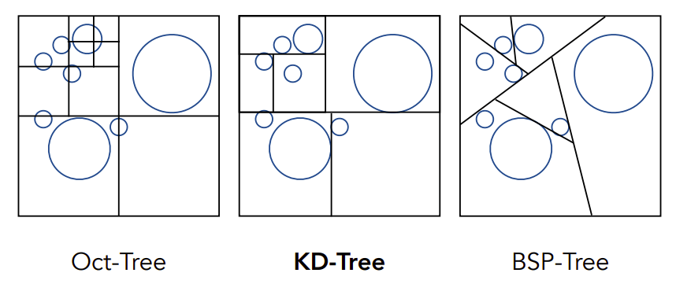
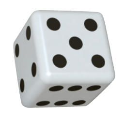

资源
课程
Lecture 13: Ray Tracing 1 (Whitted-Style Ray Tracing)
Why Ray Tracing?
Soft shadows
软阴影
Glossy reflection
光泽反射
Indirect illumination
间接照明
- Rasterization couldn’ t handle global effects well
光栅化无法很好地处理全局效果
- (Soft) shadows
（软）阴影
-
And especially when the light bounces more than once
尤其是当光线反弹不止一次时
Rasterization is fast, but quality is relatively low
光栅化速度快，但质量相对较低
早期的游戏看上去画质不好，因为这个游戏的地图太大了，为了保证性能只得牺牲画质。
不需要实时渲染的任务下，光线追踪可以渲染出很好的效果。
-
Ray tracing is accurate, but is very slow
光线追踪很精确，但速度很慢
-
Rasterization: real-time, ray tracing: offline
光栅化：实时，光线追踪：离线
-
~10K CPU core hours to render one frame in production
在生产中渲染一帧图像需要 ~10K CPU 核心小时
-
Basic Ray-Tracing Algorithm
Light Rays
光线
Three ideas about light rays
关于光线的三种观点
-
Light travels in straight lines (though this is wrong)
光是直线传播的（尽管这是错误的）
-
Light rays do not “collide” with each other if they cross (though this is still wrong)
光线交叉时不会相互 “碰撞”（尽管这仍然是错误的）
-
Light rays travel from the light sources to the eye (but the physics is invariant under path reversal-reciprocity).
光线从光源到眼睛传播（但物理规律在路径反向-互易性下保持不变）
“And if you gaze long into an abyss, the abyss also gazes into you.” — Friedrich Wilhelm Nietzsche (translated)
当你在凝视深渊时，深渊也在凝视你。
Emission Theory of Vision
视觉发射理论。认为人之所以能够看到东西，是因为人眼发出的射线投射到了相应的物体上。虽然这是错误的，但我们可以从中得到启发。
“For every complex problem there is ananswer that is clear, simple, and wrong.”——H.L.Mencken
每一个复杂的问题都有一个清晰、简单和错误的答案。
Ray Casting
射线投射
-
Generate an image by casting one ray per pixel
通过为每个像素投射一条光线生成图像
-
Check for shadows by sending a ray to the light
通过向光源发送光线检查阴影
Ray Casting - Generating Eye Rays
从眼睛处发出射线
Pinhole Camera Model
针孔摄像机模型
从眼睛处发射射线，射线第一个打到的物体即为观察到的物体。
Ray Casting - Shading Pixels (Local Only)
给像素着色
所看到的点与光照方向，物体法线，材质等参数，就可以计算出观察到的像素的颜色。
Recursive (Whitted-Style) Ray Tracing
递归（怀特式）光线追踪。比之前的光线追踪算法还要高级一点。
“An improved Illumination model for shaded display” T. Whitted, CACM 1980
Time:
-
VAX 11/780 (1979) 74m
当时渲染了 74 分钟。
-
PC (2006) 6s
-
GPU (2012) 1/30s
眼睛发出的射线还会再反射到其他面上。
还有可能产生折射。
这些打到物体上的点再计算光照，如果中间有阻挡，则视为阴影部分。
Ray-Surface Intersection
射线-表面交点。现在该研究射线在表面上的交点是如何计算的。
Ray is defined by its origin and a direction vector
射线由其原点 和方向矢量 定义
Ray equation:
用射线发出的时间 来定义这个射线：
Ray Intersection With Sphere
射线与球面的交点
Ray: $\mathbf{r}(t)=\mathbf{o}+t\mathbf{d},\mathrm{}0\leq t<\infty $
Sphere:
What is an intersection?
什么是交点？
The intersection must satisfy bothray equation and sphere equation
交点 必须同时满足射线方程和球面方程，联立两个方程即可。
Solve for intersection:
就是一元二次方程求解了。
Ray Intersection With Implicit Surface
Ray 射线方程:
General implicit surface 一般隐式曲面:
Substitute ray equation 将射线方程代入:
Solve for real, positive roots 求解实数正根:
对于这样的参数方程，对于计算机来说求解很容易！
Ray Intersection With Triangle Mesh
但是一般都用多边形面来表示一个几何，如何计算？
Why?
-
Rendering: visibility, shadows, lighting…
渲染：可见度、阴影、 光照…
-
Geometry: inside/outside test
几何：内部/外部测试
How to compute?
如何计算？
Let’ s break this down:
让我们来分析一下：
-
Simple idea: just intersect ray with each triangle
简单的想法：只需将射线与每个三角形相交即可
-
Simple, but slow (acceleration?)
简单，但速度慢（加速？）
-
Note: can have 0, 1 intersections (ignoring multiple intersections)
注意：可以有 0 个、1 个交点 (忽略多个交点）
Ray Intersection With Triangle
Triangle is in a plane
三角形位于平面内
-
Ray-plane intersection
射线与平面相交
-
Test if hit point is inside triangle
测试命中点是否位于三角形内
Many ways to optimize…
优化方法有很多…
Plane Equation
平面方程
Plane is defined by normal vector and a point on plane
平面由法向量和平面上的一个点定义
Example:
Plane Equation (if satisfies it, then is on the plane):
平面方程（若 满足该方程，则 在平面上）：
Ray Intersection With Plane
Ray equation: $\mathbf{r}(t)=\mathbf{o}+t\mathbf{d},0\leq t<\infty $
Plane equation:
Solve for intersection: 将两个方程联立，求解
\begin{aligned}t&=\frac{(\mathbf{p'-o})\cdot\mathbf{N}}{\mathbf{d}\cdot\mathbf{N}}&\textsf{Check: }0\leq t<\infty\end{aligned}
Möller Trumbore Algorithm
A faster approach, giving barycentric coordinate directly
一种更快的方法（判断射线是否经过三角形面），直接给出重心坐标
Recall: How to determine if the “intersection” is inside the triangle?
回想一下：如何确定“交点”是否在三角形内部？
将射线打到平面上的点用三角形的重心坐标来表示。
Hint: are barycentric coordinates!
提示：(1-b_1-b_2)，b_1，b_2 是重心坐标！
需要 1 次除，27 次乘，17 次加。
Accelerating Ray-Surface Intersection
加速计算射线-表面交点的方法
Ray Tracing – Performance Challenges
Simple ray-scene intersection
简单的光线场景交点
-
Exhaustively test ray-intersection with every triangle
详尽地测试每个三角形的光线交点
-
Find the closest hit (i.e. minimum )
找到最接近的命中点（即最小 ）
Problem:
问题：
-
Naive algorithm = #pixels ⨉ # traingles (⨉ #bounces)
简单算法 = #像素 ⨉ #三角形（⨉ #反射）
-
Very slow!
非常慢！
For generality, we use the term objects instead of triangles later (but doesn’ t necessarily mean entire objects)
非常慢！为了通用，我们稍后使用术语对象而不是三角形（但并不一定意味着整个对象）
像这几个超过一千多个面了，要是这么渲染的话性能太差了。
Bounding Volumes
Quick way to avoid intersections: bound complex object with a simple volume
避免上面计算相交的快速方法：用简单体积绑定复杂物体
-
Object is fully contained in the volume
物体完全包含在包围盒中
-
If it doesn’ t hit the volume, it doesn’ t hit the object
如果射线没有击中包围盒，它就不会击中物体，就不用后续计算。优化性能
如果击中了，再老老实实计算吧。
-
So test BVol first, then test object if it hit
因此，首先测试 BVol，然后测试物体是否击中
Ray-Intersection With Box
射线与盒子的相交
Understanding: box is the intersection of 3 pairs of slabs
理解：包围盒是三个平面的相交部分。
Specifically:
具体来说：
We often use an Axis-Aligned Bounding Box (AABB)
我们经常使用轴对齐包围盒 (AABB)
i.e. any side of the BB is along either , , or axis
即 BB 的任何一侧都沿着 、 或 轴
Ray Intersection with Axis-Aligned Box
2D 空间中，计算射线在 和 的交点，得到一段线段。再 和 的交点，得到另一段线段。两条线段取交集即为射线在包围盒中的范围。
2D example; 3D is the same! Compute intersections with slabs and take intersection of intervals.
2D 示例；3D 也一样！计算与板块的交点并取 间隔的交点
How do we know when the ray intersects the box?
我们如何知道射线何时与盒子相交？
-
Recall: a box (3D) = three pairs of infinitely large slabs
回想一下：一个盒子（3D）= 三对无限大的平板
-
Key ideas
关键思想
-
The ray enters the box only when it enters all pairs of slabs
只有当射线进入所有平板对时，它才会进入盒子
-
The ray exits the box as long as it exits any pair of slabs
只要射线离开任何一对平板，它就会离开盒子
-
-
For each pair, calculate the and (negative is fine)
对于每一对，计算 和 （负数也可以）
-
For the 3D box,
对于 3D 盒子，t_{\text{enter}} = \max{t_{\text{min}}}，t_{\text{exit}} = \min{t_{\text{max}}}
-
If , we know the ray stays a while in the box (so they must intersect!)
如果 ，我们知道射线会在盒子中停留一段时间（所以它们一定相交！）
-
However, ray is not a line
但是，射线不是直线
- Should check whether is negative for physical correctness!
- 应检查 是否为负数以确保物理正确性！
-
What if ?
-
The box is “behind” the ray — no intersection!
盒子在射线“后面” ——没有相交！
-
-
What if and ?
-
The ray’ s origin is inside the box — have intersection!
线的原点在盒子内部 — 有相交！
-
-
In summary, ray and AABB intersect iff
综上所述，射线与 AABB 相交，当且仅当
Why Axis-Aligned?
General
3subtractions, 6multiplies, 1 division
3 次加法，6 次乘法，1 次除法
Slabs perpendicular to x-axis
1subtraction, 1 division
只需要一次加法，一次除法
Lecture 14: Ray Tracing 2 (Acceleration & Radiometry)
Announcements
公告
-
GTC news: DLSS 2.0
图形学前沿
-
GTC news: RTXGI
-
Personal feeling
个人感受
-
Offline rendering techniques will soon become real-time
离线渲染技术将很快成为实时技术
-
Current real-time rendering techniques will still be useful
当前的实时渲染技术仍然有用（光栅化还没有那么快被淘汰）
-
Using AABBs to accelerate ray tracing
Uniform Spatial Partitions (Grids)
统一空间分割（网格）
Preprocess – Build Acceleration Grid
预处理 - 构建加速网格
-
Find bounding box
给所有物体打一个包围盒

-
Create grid
给这个包围盒用网格划分成多个小包围盒
-
Store each object in overlapping cells
将每个对象存储在重叠的单元格中
Ray-Scene Intersection
Step through grid in ray traversal order
按射线遍历顺序逐步穿过网格
For each grid cell
对于每个网格单元
Test intersection with all objects stored at that cell
测试与存储在该单元格中的所有对象的交集。如果有交集，则检测到物体，再后续计算
Grid Resolution?
One cell
-
No speedup
网格大小的设定是个问题，如果网格太大，相当于没有加速
Too many cells
-
Inefficiency due to extraneous grid traversal
无关的网格遍历导致效率低下
Heuristic:
启发式：
- #cells = C * #objs
- C ≈ 27 in 3D
网格个数大概为物体的个数的 27 倍比较合适！
Uniform Grids – When They Work Well
Grids work well on large collections of objects that are distributed evenly in size and space
网格适用于大小和空间分布均匀的大型对象集合
Uniform Grids – When They Fail
统一网格–当它们失效时
“Teapot in a stadium” problem
当各个对象的大小分布和空间分布不均匀时，寄！”体育馆里的茶壶“的问题。
Spatial Partitions
Spatial Partitioning Examples
空间划分实例

Note: you could have these in both 2D and 3D. In lecture we will illustrate principles in 2D.
注意：您可以在二维和三维中使用这些内容。在课程中，我们将说明 2D 的原理。
在计算机图形学中，空间划分是一种常用的技术，用于加速对空间中对象的搜索和查询。它通过将空间划分为更小的区域或单元来减少搜索的复杂度。以下是一些空间划分的示例：
- 网格 (Grid)：网格将空间划分为规则的网格单元，每个单元可以包含一个或多个对象。这种方法适用于静态场景，可以通过网格索引快速定位对象。
- 八叉树 (Oct-Tree)：八叉树是三维空间的类似于四叉树的划分方法。它将空间递归地分成八个立方体，每个立方体可以继续分为八个子立方体，以此类推。八叉树通常用于三维图形渲染、体素化等方面。
- kd-树 (kd-tree)：kd-树是一种多维空间划分方法，它根据数据点在各维度上的分布，递归地将空间划分为轴对齐的超矩形区域。kd-树常用于最近邻搜索等问题。（与八叉树相比，八叉树是一次 轴地划分，kd-树 每次只往一个方向划分，划分次数与维度无关）
- 二叉空间分区 (BSP-Tree)：与 kd-树相比，它斜着切。（其实没有对齐的好计算）
KD-Tree Pre-Processing
先给空间 竖的来一刀。得到蓝绿两个区域（叶子节点）。
将绿色区域作为 ，横的来一刀。得到新的绿和黄色两个叶子节点。
以此类推，一阵乱切。
Note: also subdivide nodes 1 and 2, etc.
注：还可细分节点 1 和 2 等。只是示意图是这么切的而已。
Data Structure for KD-Trees
KD 树的数据结构
Internal nodes store
内部节点存储
-
split axis: x-, y-, or z-axis
分割轴：X 轴、Y 轴或 Z 轴
-
split position: coordinate of split plane along axis
分割位置：分割平面沿轴的坐标
-
children: pointers to child nodes
子节点：指向子节点的指针
-
No objects are stored in internal nodes
内部节点中不存储任何对象
Leaf nodes store
叶节点存储
-
list of objects
对象列表
Traversing a KD-Tree
遍历 KD 树
射线穿过 时，只需判断射线与各个叶子节点 的相交关系即可。
Internal node: split
内部节点：分割
Assume it’ s leaf node: intersect all objects
假设它是叶节点：与所有叶节点里的所有对象判断相交
Internal node: split
内部节点：分割
Leaf node: intersect all objects
遇到相交的叶节点，与所有叶节点里的所有对象判断相交
Intersection found
找到相交的对象
在计算机图形学领域，Object Partitions 和 Bounding Volume Hierarchy (BVH) 是两种常用的空间分割和组织技术，用于加速场景中对象的渲染和碰撞检测等操作。
- Object Partitions： Object Partitions 是一种将场景中的对象按照位置或其他属性进行划分的技术。通常情况下，这种划分是基于空间的，将场景划分为多个区域或单元，每个单元包含一组对象。Object Partitions 技术的目的是通过合理的空间划分，减少需要处理的对象数量，从而提高渲染和碰撞检测等操作的效率。常见的 Object Partitions 技术包括 kd-树、Octree 等。
- Bounding Volume Hierarchy (BVH)： Bounding volume hierarchy (BVH) 即层次包围体，在 BVH 中，所有的几何物体都会被包在 bounding volume 的叶子节点里面，bounding volume 外面继续包着一个更大的 bounding volume，递归地包裹下去，最终形成的根节点会包裹着整个场景。
KD-树目前用的比较少，主要是不好划分，而且一个对象有可能被放置在多个叶子节点里，导致重复计算。
Object Partitions & Bounding Volume Hierarchy (BVH)
Bounding Volume Hierarchy (BVH)
根节点包含整个场景。
在根节点里套包围盒。

我再套。

我还套！
Summary: Building BVHs
-
Find bounding box
查找边界框
-
Recursively split set of objects in two subsets
递归地将对象集合分成两个子集
-
Recompute the bounding box of the subsets
重新计算子集的边界框
-
Stop when necessary
必要时停止
-
Store objects in each leaf node
在每个叶节点中存储对象
Building BVHs
How to subdivide a node?
如何细分节点？
-
Choose a dimension to split
选择要分割的维度
-
Heuristic #1: Always choose the longest axis in node
启发式 1： 始终选择节点中最长的轴线
-
Heuristic #2: Split node at location of median object
启发式 2： 在中位对象的位置分割节点
Termination criteria?
终止标准？
-
Heuristic: stop when node contains few elements (e.g. 5)
启发式：当节点包含较少元素（如 5 个）时停止
Data Structure for BVHs
Internal nodes store
内部节点存储
-
Bounding box
边界框
-
Children: pointers to child nodes
子节点：指向子节点的指针
Leaf nodes store
叶节点存储
-
Bounding box
边界框
-
List of objects
对象列表
Nodes represent subset of primitives in scene
节点代表场景中基元的子集
-
All objects in subtree
子树上的所有对象
BVH Traversal
1 | |
递归地检测是否相交。
Spatial vs Object Partitions
Spatial partition (e.g.KD-tree)
空间分区（如 KD 树）
-
Partition space into non-overlapping regions
将空间划分为不重叠的区域
-
An object can be contained in multiple regions
一个对象可包含在多个区域中
Object partition (e.g. BVH)
对象分区（如 BVH）
-
Partition set of objects into disjoint subsets
将对象集合划分为互不相交的子集
-
Bounding boxes for each set may overlap in space
每个子集的边界框可能在空间上重叠
Basic radiometry (辐射度量学)
Advertisement: new topics from now on, scarcely covered in other graphics courses
广告：从现在开始，其他图形课程很少涉及的新主题
Radiometry — Motivation
Observation
-
In assignment 3, we implement the Blinn-Phong model
在作业 3 中，我们执行 Blinn-Phong 模型
-
Light intensity is 10, for example
例如，光强 为 10
-
But 10 what?
但 10 是什么？连单位都没有
Do you think Whitted style ray tracing gives you CORRECT results?
你认为怀特风格的光线追踪能得出正确的结果吗？
All the answers can be found in radiometry
所有答案都可以在辐射测量中找到
-
Also the basics of “Path Tracing”
还有”路径跟踪“的基础知识
Radiometry
辐射测量
Measurement system and units for illumination
照明测量系统和单位
Accurately measure the spatial properties of light
精确测量光的空间特性
-
New terms: Radiant flux, intensity, irradiance, radiance
新术语：辐射通量、强度、辐照度、辐射度
Perform lighting calculations in a physically correct manner
以物理上正确的方式进行照明计算
My personal way of learning things:
我个人的学习方法：
-
WHY, WHAT, then HOW
为什么、是什么，然后是怎么做
Radiant Energy and Flux (Power)
辐射能量和通量（功率）
Definition: Radiant energy is the energy of electromagnetic radiation. It is measured in units of joules, and denoted by the symbol:
定义：辐射能是电磁辐射的能量。它以焦耳为单位，用符号表示：
Definition: Radiant flux (power) is the energy emitted, reflected, transmitted or received, per unit time
定义：辐射通量（功率）是单位时间内发射、反射、传输或接收的能量
Flux – #photons flowing through a sensor in unit time
光通量–单位时间内流经传感器的光子数量
Important Light Measurements of Interest
重要的相关光测量值
光源发出的光
“Radiant Intensity”
辐射强度
光落在物体表面
“Irradiance”
"辐照度"

光沿着光线行进
"Radiance"
“光芒”
Radiant Intensity
辐射强度
Definition: The radiant (luminous) intensity is the power per unit solid angle (?) emitted by a point light source.
定义： 辐射（发光）强度是点光源每单位立体角（?）这是个什么玩意
The candela is one of the seven SI base units.
坎德拉是国际单位制七个基本单位之一。
Angles and Solid Angles
Angle: ratio of subtended arc length on circle to radius
平面角：圆上被摄弧长与半径之比
-
-
Circle has radians
圆的弧度为
Solid angle: ratio of subtended area on sphere to radius squared
实心角：球面上的入射面积与半径平方的比值
-
-
Sphere has steradians
Differential Solid Angles
这个实体角的求解公式：
**Sphere: **
as a direction vector
将 作为方向向量
Will use to denote a direction vector (unit length)
用 表示方向向量（单位长度）
Isotropic Point Source
各向同性点源
Modern LED Light
Output: 815 lumens
输出：815 流明
(11W LED replacement for 60W incandescent)
（11 瓦 LED 可替代 60 瓦白炽灯）
Radiant intensity?
辐射强度？
Assume isotropic:
Intensity = 815 lumens / 4pi sr = 65 candelas
Lecture 15 Ray Tracing 3 (Light Transport & Global Illumination)
Reviewing Concepts
| 名称 | 公式 | 解释 |
|---|---|---|
| Radiant energy 辐射能 （在 CG 中很少使用） |
the energy of electromagnetic radiation 电磁辐射的能量 |
|
| Radiant flux (power) 辐射通量（功率） | Energy per unit time 单位时间能量 |
|
| Radiant intensity 辐射强度 | power per unit solid angle 单位立体角功率 |
|
| Solid Angle 实体角 | ratio of subtended area on sphere to radius squared 球面所占面积与半径平方之比 |
Irradiance
辐照度
Definition: The irradiance is the power per unit area incident on a surface point.
定义：辐照度是照射在表面某一点的每单位面积的功率。
Lambert’ s Cosine Law
兰伯特余弦定理
Irradiance at surface is proportional to cosine of angle between light direction and surface normal.
表面辐照度与光线方向和表面法线之间的角度的余弦成正比。
(Note: always use a unit area, the cosine applies on )
（注意：始终使用单位面积，余弦适用于 ）
立方体顶面接收一定量的能量
$E=\frac{\Phi}{A}$
60º 旋转立方体的顶面接收一半功率
$E=\frac{1}{2}\frac{\Phi}{A}$
一般而言，单位面积功率与 $\cos\theta=l\cdot n$ 相关
$E=\frac{\Phi}{A}\cos\theta$
Why Do We Have Seasons?
为什么我们会有季节？因为太阳光到地球各个地方的夹角不同。
Earth’ s axis of rotation: ~23.5° off axis
Correction: Irradiance Falloff
校正：辐照度衰减
Assume light is emitting power in a uniform angular distribution
假设光以均匀的角度分布发射功率
Compare irradiance at surface of two spheres:
比较两个球体表面的辐照度：
Radiance
辐射
Radiance is the fundamental field quantity that describes the distribution of light in an environment
辐射度是描述环境中光分布的基本场量
-
Radiance is the quantity associated with a ray
辐射度是与射线相关的量
-
Rendering is all about computing radiance
渲染就是计算辐射度
Definition: The radiance (luminance) is the power emitted, reflected, transmitted or received by a surface, per unit solid angle, per projected unit area.
定义：辐射度（亮度）是表面在单位立体角、单位投影面积上发射、反射、透射或接收的功率。
accounts for projected surface area
表示投影表面积
Definition: power per unit solid angle per projected unit area.
定义：单位投影面积上单位立体角的功率。
Recall
-
Irradiance: power per projected unit area
辐照度：单位投影面积的功率
-
Intensity: power per solid angle
强度：单位立体角的功率
So
-
Radiance: Irradiance per solid angle
辐射度：单位立体角的辐照度
-
Radiance: Intensity per projected unit area
辐射度：单位投影面积的强度
Incident Radiance
入射辐射
Incident radiance is the irradiance per unit solid angle arriving at the surface.
入射辐射度是到达表面的每单位立体角的辐射度。
i.e. it is the light arriving at the surface along a given ray (point on surface and incident direction).
即，它是沿给定射线（表面上的点和入射方向）到达表面的光。
Exiting Radiance
Exiting surface radiance is the intensity per unit projected area leaving the surface.
出射表面辐射度是离开表面的每单位投影面积的强度。
e.g. for an area light it is the light emitted along a given ray (point on surface and exit direction).
例如，对于区域光来说，它是沿给定射线（表面上的点和出射方向）发射的光。
Irradiance vs. Radiance
辐照度与辐射度
Irradiance: total power received by area
辐照度：区域 接收的总功率
Radiance: power received by area from “direction”
辐射度：区域 从“方向” 接收的功率
Unit Hemisphere 单位半球:
Bidirectional Reflectance Distribution Function (BRDF)
双向反射分布函数 (BRDF)
Reflection at a Point
点的反射
Radiance from direction turns into the power that receives Then power will become the radiance to any other direction
来自方向 的辐射度变为 接收的功率 然后功率 将成为到任何其他方向 的辐射度
Differential irradiance incoming 入射光的差异辐照度:
Differential radiance exiting (due to )差分辐射退出（由于 ）：
BRDF
The Bidirectional Reflectance Distribution Function (BRDF) represents how much light is reflected into each outgoing direction from each incoming direction
双向反射分布函数 (BRDF) 表示从每个入射方向反射到每个出射方向 的光量
The Reflection Equation
反射方程
Challenge: Recursive Equation
挑战：递归方程
Reflected radiance depends on incoming radiance
反射辐射取决于入射辐射
- reflected radiance 反射辐射
- incoming radiance 入射辐射
But incoming radiance depends on reflected radiance (at another point in the scene)
但入射辐射取决于反射辐射（在场景中的另一点）
The Rendering Equation
渲染方程
Re-write the reflection equation 重写反射方程：
by adding an Emission term to make it general!
通过添加发射项使其变得通用！
The Rendering Equation
How to solve? Next lecture!
Note: now, we assume that all directions are pointing outwards!
注意：现在，我们假设所有方向都指向外面（）！
Understanding the rendering equation
理解渲染方程
对于单个点光源：
-
Reflected Light (Output Image) 反射光（输出图像）
-
Emission
自发光
-
Incident Light (from light source)
入射光（来自光源）
-
BRDF
-
Cosine of Incident angle
入射角余弦
多个点光源，求和。Sum over all light sources.
平面光源，使用积分。Replace sum with integral.
Surfaces (interreflection)
表面（相互反射）
这是当年那个论文渲染出来的结果。
Rendering Equation as Integral Equation
将方程渲染为积分方程
要是能看到一个物体，要么它自身能发光，要么它能反射出其它光源发出的光。
Is a Fredholm Integral Equation of second kind [extensively studied numerically] with canonical form
是具有规范形式的第二类 Fredholm 积分方程 [经过广泛的数值研究]
$ 是 Kernel of equation Light Transport Operator.
Can be discretized to a simple matrix equation [or system of simultaneous linear equations] (, are vectors, is the light transport matrix)
可以离散化为一个简单的矩阵方程[或联立线性方程组]（、为向量，为光传输矩阵）
Ray Tracing and extensions
光线追踪和扩展
-
General class numerical Monte Carlo methods
通用类数值蒙特卡罗方法
-
Approximate set of all paths of light in scene
场景中所有光路的近似集
在矩阵运算中， 有类似泰勒公式一样的性质：Binomial Theorem 二项式定理
-
Emission directly From light sources
直接从光源发射
-
Direct Illumination on surfaces
表面直接照明
-
Indirect Illumination (One bounce indirect) [Mirrors, Refraction]
间接照明（一次间接反射）[镜子、折射]
-
(Two bounce indirect illum.)
（两次反射间接照明。）
如果只取 ，则我们可以视为 Shading in Rasterization 光栅化中的着色
Direct illumination 不计算反射，背光面将会一片漆黑。
计算的反射越多，画面越真实，也会越亮，但不会无限变亮。
Probability Review
Random Variables
随机变量
random variable. Represents a distribution of potential values
随机变量。表示潜在值的分布
probability density function (PDF). Describes relative probability of a random process choosing value
概率密度函数（PDF）。描述随机过程选择值的相对概率
Example: uniform PDF: all values over a domain are equally likely
示例：均匀密度函数：域内的所有值都具有相同的可能性

示例：扔骰子
takes on values
Probabilities
概率
discrete values with probability
个离散值 具有概率
Requirements of a probability distribution:
概率分布的要求：
Six-sided die example 六面骰子示例：
Expected Value of a Random Variable
随机变量的期望值
The average value that one obtains if repeatedly drawing samples from the random distribution.
从随机分布中反复抽取样本所获得的平均值。
Expected value of ：
Die example:
Continuous Case: Probability Distribution Function (PDF)
连续情况：概率分布函数 (PDF)
A random variable that can take any of a continuous set of values, where the relative probability of a particular value is given by a continuous probability density function .
随机变量 可以取一组连续的值中的任意一个，其中特定值的相对概率由连续概率密度函数 给出。
Conditions on :
Expected value of :
Lecture 16 Ray Tracing 4 (Monte Carlo Path Tracing)
Monte Carlo Integration
Why: we want to solve an integral, but it can be too difficult to solve analytically.
原因：我们想解一个积分，但用分析方法（牛顿莱布尼茨公式）解太难了。
What & How: estimate the integral of a function by averaging random samples of the function’ s value.
内容和方法：通过对函数值的随机样本求平均值来估计函数的积分。
Let us define the Monte Carlo estimator for the definite integral of given function
让我们为给定函数 的定积分定义蒙特卡洛估计量
Definite integral 定积分：
Random variable 随机变量：
Monte Carlo estimator 蒙特卡洛估计量：
Example: Uniform Monte Carlo Estimator
示例：统一蒙特卡罗估计量
Uniform random variable 对于均匀随机变量：
Uniform random variable 均匀随机变量：
Basic Monte Carlo estimator 基本蒙特卡罗估计量：
Monte Carlo Integration
蒙特卡罗积分
Some notes:
一些注意事项：
-
The more samples, the less variance.
样本越多，方差越小。
-
Sample on , integrate on .
在 上采样，在 上积分。
Path Tracing
路径追踪
Motivation: Whitted-Style Ray Tracing
动机：Whitted 式光线追踪
Whitted-style ray tracing:
Whitted 式光线追踪：
-
Always perform specular reflections / refractions
始终执行镜面反射/折射
-
Stop bouncing at diffuse surfaces
停止在漫反射表面反弹
Are these simplifications reasonable?
这些简化合理吗？
High level: let’ s progressively improve upon Whitted-Style Ray Tracing and lead to our path tracing algorithm!
高层次：让我们逐步改进 Whitted 风格的光线追踪并引出我们的路径追踪算法！
Whitted-Style Ray Tracing: Problem 1
Whitted 式光线追踪：问题 1
Where should the ray be reflected for glossy materials?
对于光泽材质来说，射线应该在哪里反射？
应为 Glossy reflection，物体接受光和其它物体反射过来的光。
No reflections between diffuse materials?
漫反射材质之间没有反射吗？
应为右边，物体（如长方体）接受光和其它物体反射（如红墙壁）过来的光。
Whitted-Style Ray Tracing is Wrong
Whitted 式光线追踪是错误的
But the rendering equation is correct
但渲染方程是正确的
But it involves
但它涉及
-
Solving an integral over the hemisphere, and
求解半球上的积分，以及
-
Recursive execution
递归执行
How do you solve an integral numerically?
如何用数值方法求解积分？
A Simple Monte Carlo Solution
简单的蒙特卡罗解决方案
Suppose we want to render one pixel (point) in the following scene for direct illumination only
假设我们想在以下场景中渲染一个像素（点），仅用于直接照明
Note: this is an area light

Abuse the concept of Reflection Equation a little bit
稍微滥用一下反射方程的概念
(again, we assume all directions are pointing outwards)
（再次假设所有方向都指向外面）
Fancy as it is, it’ s still just an integration over directions
尽管很花哨，但它仍然只是对方向的整合
So, of course we can solve it using Monte Carlo integration!
因此，我们当然可以使用蒙特卡洛积分来解决这个问题！
We want to compute the radiance at towards the camera
我们想要计算 处朝向相机的辐射度
Monte Carlo integration:
蒙特卡洛积分：
What’ s our “”?
What’ s our pdf?
(assume uniformly sampling the hemisphere)
（假设对半球进行均匀采样）
So, in general
(note: abuse notation a little bit for )
（注意：对 的符号有点滥用）
What does it mean?
这是什么意思？
A correct shading algorithm for direct illumination!
直接照明的正确着色算法！
shade(p, wo)
Randomly choose N directions wi~pdf
Lo = 0.0
For each wi
Trace a ray r(p, wi)
If ray r hit the light
Lo += (1 / N) * L_i * f_r * cosine / pdf(wi)
Return Lo
Introducing Global Illumination
全局照明简介
One more step forward: what if a ray hits an object?
also reflects light to ! How much? The dir. illum. at !
也反射光到 ！反射了多少？ 处的方向光！
shade(p, wo)
Randomly choose N directions wi~pdf
Lo = 0.0
For each wi
Trace a ray r(p, wi)
If ray r hit the light
Lo += (1 / N) * L_i * f_r * cosine / pdf(wi)
Else If ray r hit an object at q
Lo += (1 / N) * shade(q, -wi) * f_r * cosine / pdf(wi)
Return Lo
Path Tracing
路径追踪
Problem 1: Explosion of #rays as #bounces go up:
光线经过几次反射，所产生的光线数量就过多了，显卡就算不过来了。
From now on, we always assume that only 1 ray is traced at each shading point:
从现在开始，我们始终假设每个着色点只追踪 1 条射线：
shade(p, wo)
Randomly choose ONE direction wi~pdf(w) // 不用 for 循环了
Trace a ray r(p, wi)
If ray r hit the light
Return L_i * f_r * cosine / pdf(wi)
Else If ray r hit an object at q
Return shade(q, -wi) * f_r * cosine / pdf(wi)
This is path tracing! (FYI, Distributed Ray Tracing if )
这是路径追踪！ （仅供参考，如果 ，则为分布式光线追踪）
Ray Generation
射线生成
But this will be noisy!
但是这样会产生很多噪声！
No problem, just trace more paths through each pixel and average their radiance!
但这样会很吵！没问题，只需在每个像素上追踪更多路径并平均它们的辐射度！
Very similar to ray casting in ray tracing
与光线追踪中的光线投射非常相似
ray_generation(camPos, pixel)
Uniformly choose N sample positions within the pixel
pixel_radiance = 0.0
For each sample in the pixel
Shoot a ray r(camPos, cam_to_sample)
If ray r hit the scene at p
pixel_radiance += 1 / N * shade(p, sample_to_cam)
Return pixel_radiance
Now are we good? Any other problems in shade()?
shade(p, wo)
Randomly choose ONE direction wi~pdf(w)
Trace a ray r(p, wi)
If ray r hit the light
Return L_i * f_r * cosine / pdf(wi)
Else If ray r hit an object at q
Return shade(q, -wi) * f_r * cosine / pdf(wi)
Problem 2: The recursive algorithm will never stop! 递归算法，无限递归！
如果人为限定光线反弹次数：
Dilemma: the light does not stop bouncing indeed!
困境：光线确实不会停止反弹！
Cutting #bounces == cutting energy!
减少反弹 == 减少能量！

如此做，3 bounces 和 17 bounces 的亮度是不一样的。
Solution: Russian Roulette (RR)
解决方案：俄罗斯轮盘赌（RR）
Russian Roulette is all about probability
俄罗斯轮盘赌完全是概率游戏
With probability , you are fine
概率 ，则没问题
With probability , otherwise
概率 ，另外情况
Previously, we always shoot a ray at a shading point and get the shading result
以前，我们总是向着色点发射射线并得到着色结果
Suppose we manually set a probability
假设我们手动设置一个概率
With probability , shoot a ray and return the shading result divided by :
以概率 ，发射一条射线并返回除以 的着色结果：
With probability , don’ t shoot a ray and you’ ll get
以概率 ，不发射射线，您将得到
In this way, you can still expect to get ! :
这样，您仍然可以期望得到 ！：
shade(p, wo)
Manually specify a probability P_RR
Randomly select ksi in a uniform dist. in [0, 1]
If (ksi > P_RR) return 0.0;
Randomly choose ONE direction wi~pdf(w)
Trace a ray r(p, wi)
If ray r hit the light
Return L_i * f_r * cosine / pdf(wi) / P_RR
Else If ray r hit an object at q
Return shade(q, -wi) * f_r * cosine / pdf(wi) / P_RR
Now we already have a correct version of path tracing!
现在我们已经有了正确版本的路径追踪！
But it’ s not really efficient.
但它并不是很高效。
Sampling the Light
光采样
Understanding the reason of being inefficient
了解效率低下的原因
there will be 1 ray hitting the light. So a lot of rays are “wasted” if we uniformly sample the hemisphere at the shading point.
会有 1 条射线击中光源。因此，如果我们在着色点处均匀采样半球，则很多射线都会被“浪费”。
Sampling the Light (pure math)
光采样（纯数学）
Monte Carlo methods allows any sampling methods, so we can sample the light (therefore no rays are “wasted”)
蒙特卡罗方法允许任何采样方法，因此我们可以对光进行采样（因此不会“浪费”任何光线）
Assume uniformly sampling on the light:
假设对光进行均匀采样：
But the rendering equation integrates on the solid angle 但渲染方程在立体角上积分: .
Recall Monte Carlo Integration
回想一下蒙特卡罗积分:
Sample on & integrate on
在 上采样并在 上积分
Since we sample on the light, can we integrate on the light?
由于我们在光上采样，我们可以在光上积分吗？
Need to make the rendering equation as an integral of
需要将渲染方程作为 的积分
Need the relationship between and
需要 和 之间的关系
Easy! Recall the alternative def. of solid angle:
简单！回想一下立体角的另一种定义：
Projected area on the unit sphere
单位球面上的投影面积
Then we can rewrite the rendering equation as
然后我们可以将渲染方程重写为
Now an integration on the light!
现在对光进行积分！
Monte Carlo integration:
蒙特卡洛积分：
“”: everything inside 里面的一切
Previously, we assume the light is “accidentally” shot by uniform hemisphere sampling
之前，我们假设光线是“意外地”通过均匀半球采样射出的
Now we consider the radiance coming from two parts:
现在我们考虑来自两部分的辐射：
-
light source (direct, no need to have RR)
光源（直接，不需要 RR）
-
other reflectors (indirect, RR)
其他反射器（间接，RR）
shade(p, wo)
# Contribution from the light source.
Uniformly sample the light at x’ (pdf_light = 1 / A)
L_dir = L_i * f_r * cos θ * cos θ’ / |x’ - p|^2 / pdf_light
# Contribution from other reflectors.
L_indir = 0.0
Test Russian Roulette with probability P_RR
Uniformly sample the hemisphere toward wi (pdf_hemi = 1 / 2pi)
Trace a ray r(p, wi)
If ray r hit a non-emitting object at q
L_indir = shade(q, -wi) * f_r * cos θ / pdf_hemi / P_RR
Return L_dir + L_indir
One final thing: how do we know if the sample on the light is not blocked or not?
最后一件事：我们如何知道光上的样本是否被遮挡？
# Contribution from the light source.
L_dir = 0.0
Uniformly sample the light at x’ (pdf_light = 1 / A)
Shoot a ray from p to x’
If the ray is not blocked in the middle
L_dir = …
Now path tracing is finally done!
Some Side Notes
一些补充说明
-
Path tracing (PT) is indeed difficult
路径追踪 (PT) 确实很难
-
Consider it the most challenging in undergrad CS
认为它是本科计算机科学中最具挑战性的
-
Why: physics, probability, calculus, coding
原因：物理、概率、微积分、编码
-
Learning PT will help you understand deeper in these
学习 PT 将帮助您更深入地理解这些
-
-
Is it still “Introductory”?
它仍然是“入门级”吗？
-
Not really, but it’s “modern" :)
不是，但它是“现代” :)
-
And so learning it will be rewarding also because …
因此学习它也会很有价值，因为……
-
Is Path Tracing Correct?
Yes, almost 100% correct, a.k.a. PHOTO-REALISTIC
是的，几乎 100% 正确，又名照片级真实感
Ray tracing: Previous vs. Modern Concepts
光线追踪：过去与现代概念
-
Previous
早期
-
Ray tracing == Whitted-style ray tracing
光线追踪 == Whitted 式光线追踪
-
-
Modern (my own definition)
现代（我自己的定义）
-
The general solution of light transport, including
光传输的一般解决方案，包括
-
(Unidirectional & bidirectional) path tracing
-
（单向和双向）路径追踪
-
Photon mapping
光子映射
-
Metropolis light transport
Metropolis 光传输
-
VCM / UPBP…
Things we haven’ t covered / won’ t cover
我们没有涉及/不会涉及的内容
-
Uniformly sampling the hemisphere
均匀采样半球
-
How? And in general, how to sample any function? (sampling)
如何采样？一般来说，如何采样任何函数？ （采样）
-
-
Monte Carlo integration allows arbitrary pdfs
蒙特卡罗积分允许任意 pdf
-
What’s the best choice? (importance sampling)
最佳选择是什么？ （重要性采样）
-
-
Do random numbers matter?
随机数重要吗？
-
Yes! (low discrepancy sequences)
是的！ （低差异序列）
-
-
I can sample the hemisphere and the light
我可以对半球和光线进行采样
-
Can I combine them? Yes! (multiple imp. sampling)
我可以将它们结合起来吗？是的！（多重采样）
-
-
The radiance of a pixel is the average of radiance on all paths passing through it
像素的辐射度是通过它的所有路径的辐射度的平均值
-
Why? (pixel reconstruction filter)
为什么？（像素重建滤波器）
-
-
Is the radiance of a pixel the color of a pixel?
像素的辐射度是像素的颜色吗？
-
No. (gamma correction, curves, color space)
不是。（伽马校正、曲线、色彩空间）
-
-
Asking again, is path tracing still “Introductory”?
再次询问，路径追踪仍然是“入门级”吗？
-
This time, yes. Fear the science, my friends.
这次是的。朋友们，敬畏科学吧。
-